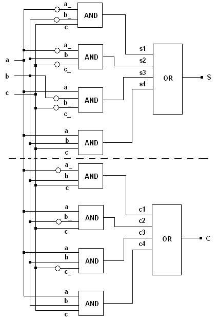
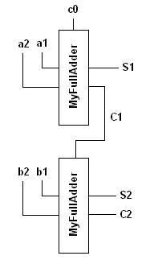
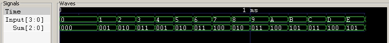

Next: Example Module 2, Up: Modules
This section presents a simple example illustrating the construction of a module which is built as a grouping of other smaller modules. The aim is to present to the reader a technique of grouping smaller modules into a bigger module. The example builds a 1-bit full adder module using only the off-the-shelf logic gate modules provided in libLCS.
Let a, b, c be the two input bits and the carry input respectively. Let S and C
be the sum and carry outputs respectively. Then, the following logic equations show the relation between the output
bits and the input bits of a 1-bit fulladder.
S = a&~b&~c | ~a&b&~c | ~a&~b&c | a&b&c,
C = a&b&~c | a&~b&c | ~a&b&c | a&b&c
The equations could be further simplified or written in terms of XOR logic. However, the idea here is not to implement the best fulladder module. It is to illustrate building a module as a grouping of other modules. The diagram for the logic circuit is as follows. The circular bubbles denote NOT gates.

Building a module as a group of smaller modules is equivalent to defining and implementing a C++ class encapsulating the functionality of the desired module. We will build the fulladder module using only AND, OR and NOT gates. The definition of our fulladder module class is as follows. The variable names in the definition correspond to the naming in the above diagram.
class MyFullAdder
{
public:
// Constructor argument description:
// 1. The single line bus S corresponds to the sum output.
// 2. The single line bus C corresponds to the carry output.
// 3. The single line busses a and b correspond to the single bit inputs.
// 4. The single line bus c corresponds to the carry input.
MyFullAdder(const Bus<1> &S, const Bus<1> &C,
const Bus<1> &a, Bus<1> &b, Bus<1> &c);
~MyFullAdder();
private:
// NOT gates to generate the inverses of the input bits.
Not<> *nota, *notb, *notc;
// 3-input AND gates corresponding to the minterms for
// sum and carry outputs.
And<3> *sa1, *sa2, *sa3, *sa4, *ca1, *ca2, *ca3, *ca4;
// 4-input OR gates to generate the final output.
Or<4> *sor, *cor;
};
The reader should refer to the API documentation (or the developer guide) and the chapter Introduction to libLCS to refresh and know more about the logic gate classes and the bus classes in libLCS. In this section, it is assumed that the user is familiar with these classes.
There are two points which one should note from the above class definition: 1. The above module class constructor prototype specifies how one should/can initialise a fulladder module object. 2. All the private members of the class correspond to the logic gate modules which constitute our fulladder module. These points will in general hold for all modules which are implemented as a grouping of smaller modules.
In the sub-section below, we will see the implementation of the constructor and the destructor. These implementations will show the reader as to how connections between the contituent modules of our fulladder module are made.
We will first see the implementation of the constructor of the fulladder module. The bus variable names in the code is same as in the circuit diagram above.
MyFullAdder::MyFullAdder(const Bus<1> &S, const Bus<1> &C,
const Bus<1> &a, Bus<1> &b, Bus<1> &c)
{
// Declaration of connection busses.
Bus<> a_, b_, c_, s1, s2, s3, s4, c1, c2, c3, c4;
// Each of the gates should be initialised with proper bus
// connections.
// Initialising the NOT gates.
nota = new Not<>(a_, a); notb = new Not<>(b_, b); notc = new Not<>(c_, c);
// Initialising the AND gates for the
// minterms corresponding to the sum output.
sa1 = new And<3>(s1, (a_,b_,c)); sa3 = new And<3>(s3, (a,b_,c_));
sa2 = new And<3>(s2, (a_,b,c_)); sa4 = new And<3>(s4, (a,b,c));
// Initialising the AND gates for the
// minterms corresponding to the carry output.
ca1 = new And<3>(c1, (a_,b,c)); ca2 = new And<3>(c2, (a,b_,c));
ca3 = new And<3>(c3, (a,b,c_)); ca4 = new And<3>(c4, (a,b,c));
// Initialising the OR gates which
// generate the final outputs.
sor = new Or<4>(S, (s1,s2,s3,s4)), cor = new Or<4>(C, (c1,c2,c3,c4));
}
The circuit, as shown in the above diagram, requires three NOT gates, eight 3-input AND gates, and two 4-input OR gates. These logic gates were initialised suitably in the above constructor implementation. The connection between the various logic gates are implicitly made when the logic gate modules are initialised by the passing the correct input and output bus arguments to the logic gate constructors. There are no special procedures to make the connections between modules in libLCS.
Below is the
MyFullAdder destructor implementation. The destructor will have to delete all the logic gate
modules which were initialised in the constructor.
MyFullAdder::~MyFullAdder()
{
// The destructor should delete all the gates
// which were initialised during construction.
delete nota; delete notb; delete notc;
delete sa1; delete sa2; delete sa3; delete sa4;
delete ca1; delete ca2; delete ca3; delete ca4;
delete sor; delete cor;
}
We will now test the MyFullAdder class by building a 2-bit fulladder using two MyFullAdder modules. The
circuit is as follows.
Building the above circuit is as simple as declaring the busses involved, and initialising the two
MyFullAdder
modules. This is done as follows.
// Declaring the busses involved in out circuit.
// Note that the bus c0 (the carry input to the first full-adder)
// has been initialised with a value of 0 (or lcs::LOW) on its line.
Bus<> a1, b1, a2, b2, c0(0), S1, C1, S2, C2;
// Initialising the 1-bit full adder modules.
MyFullAdder fa1(S1, C1, a1, a2, c0), fa2(S2, C2, b1, b2, C1);
The complete program which builds a 2-bit fulladder using two MyFullAdder modules is as follows. One can copy
this program as is into their favourite editor, and compile and run to see the result.
#include <lcs/lcs.h>
using namespace lcs;
class MyFullAdder
{
public:
// Constructor argument description:
// 1. The single line bus S corresponds to the sum output.
// 2. The single line bus C corresponds to the carry output.
// 3. The single line busses a and b correspond to the single bit inputs.
// 4. The single line bus c corresponds to the carry input.
MyFullAdder(const Bus<1> &S, const Bus<1> &C,
const Bus<1> &a, Bus<1> &b, Bus<1> &c);
~MyFullAdder();
private:
// NOT gates to generate the inverses of the input bits.
Not<> *nota, *notb, *notc;
// 3-input AND gates corresponding to the minterms for
// sum and carry outputs.
And<3> *sa1, *sa2, *sa3, *sa4, *ca1, *ca2, *ca3, *ca4;
// 4-input OR gates to generate the final output.
Or<4> *sor, *cor;
};
MyFullAdder::MyFullAdder(const Bus<1> &S, const Bus<1> &C,
const Bus<1> &a, Bus<1> &b, Bus<1> &c)
{
// Declaration of connection busses.
Bus<> a_, b_, c_, s1, s2, s3, s4, c1, c2, c3, c4;
// Each of the gates should be initialised with proper bus
// connections.
// Initialising the NOT gates.
nota = new Not<>(a_, a); notb = new Not<>(b_, b); notc = new Not<>(c_, c);
// Initialising the AND gates for the
// minterms corresponding to the sum output.
sa1 = new And<3>(s1, (a_,b_,c)); sa3 = new And<3>(s3, (a,b_,c_));
sa2 = new And<3>(s2, (a_,b,c_)); sa4 = new And<3>(s4, (a,b,c));
// Initialising the AND gates for the
// minterms corresponding to the carry output.
ca1 = new And<3>(c1, (a_,b,c)); ca2 = new And<3>(c2, (a,b_,c));
ca3 = new And<3>(c3, (a,b,c_)); ca4 = new And<3>(c4, (a,b,c));
// Initialising the OR gates which
// generate the final outputs.
sor = new Or<4>(S, (s1,s2,s3,s4)), cor = new Or<4>(C, (c1,c2,c3,c4));
}
MyFullAdder::~MyFullAdder()
{
// The destructor should delete all the gates
// which were initialised during construction.
delete nota; delete notb; delete notc;
delete sa1; delete sa2; delete sa3; delete sa4;
delete ca1; delete ca2; delete ca3; delete ca4;
delete sor; delete cor;
}
int main(void)
{
// Declaring the busses involved in out circuit.
// Note that the bus c0 (the carry input to the first full-adder)
// has been initialised with a value of 0 (or lcs::LOW) on its line.
Bus<> a1, b1, a2, b2, c0(0), S1, C1, S2, C2;
// Initialising the 1-bit full adder modules.
MyFullAdder fa1(S1, C1, a1, a2, c0), fa2(S2, C2, b1, b2, C1);
// Initialising monitor objects which monitor the inputs and the
// 3 sum and carry output bits.
ChangeMonitor<4> inputMonitor((a1,b1,a2,b2), "Input", DUMP_ON);
ChangeMonitor<3> outputMonitor((S1,S2,C2), "Sum", DUMP_ON);
// Initialising a tester object which feeds in different inputs
// into our circuit.
Tester<4> tester((a1,b1,a2,b2));
Simulation::setStopTime(2000); // Set the time upto which the simulation should run.
Simulation::start(); // Start the simulation.
return 0;
}
Apart from the constructs discussed earlier in this section, the above program initialises two ChangeMonitor
objects and a Tester object. These constructs are discussed in detail in the section A Simple Example.
The reader should first refer to this section familiarise him-/herself with these classes and the class
Simulation.
When the above program is compiled and executed, a VCD file is generated as we have initialised two
ChangeMonitor objects with the DUMP_ON, one monitoring the input, and the other monitoring sum and
carry outputs. The following is the screen shot of the GTKWave plot of the generated VCD file.
